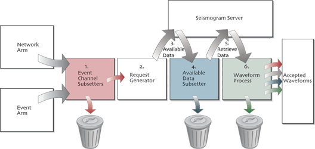
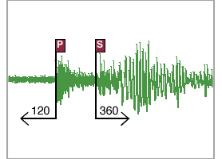
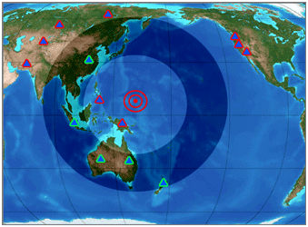
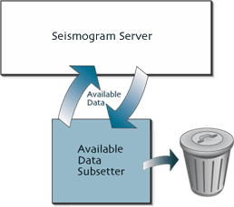
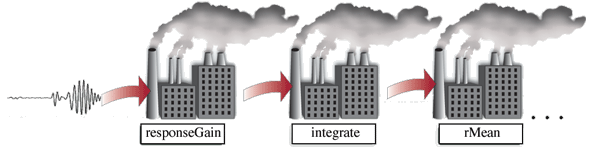

Waveform arm's structure

The waveform arm is the most complex of the arms. It takes the successful channels from the network arm and the successful events from the event arm and runs them through a series of steps.
- Event channel subsetters inspect the combination of a successful event from the event arm and a successful channel from the network arm.
- A request for data is generated based on phase arrival times or the earthquake's origin time.
- A server is asked if it has data for the request's time.
- Availabe data subsetters inspect the response from the server.
- Data is retrieved from the server.
- Subsetting and processing are done on the data.
Simple waveform arm
<?xml version="1.0"?> <sod> <eventArm>Same as event tutorial</eventArm> <networkArm>Same as network tutorial</networkArm> <waveformArm> <phaseRequest> <model>prem</model> <beginPhase>ttp</beginPhase> <beginOffset> <unit>SECOND</unit> <value>-120</value> </beginOffset> <endPhase>tts</endPhase> <endOffset> <unit>SECOND</unit> <value>360</value> </endOffset> </phaseRequest> <fdsnDataSelect/> <printlineSeismogramProcess/> <sacWriter/> </waveformArm> </sod>

This wavform arm contains no subsetters. The phaseRequest
specifies that a request should be made for data from
120 seconds before the P wave arrival to 3 minutes after the S wave arrival. fdsnDataSelect
tells SOD to fetch
that data from IRIS's FDSN DataSelect web service. The printlineSeismogramProcess prints
information about each seismogram it retrieves.
Event channel subsetters
<distanceRange> <unit>DEGREE</unit> <min>30</min> <max>90</max> </distanceRange>

The previous recipe gets data for every channel, for every earthquake that SOD finds. Adding this subsetter to the waveform arm tells SOD to process only channels that are 30 to 90 degrees away from an earthquake. In this image, the triangles are channels and the earthquake is at the center of the shadowed ring. SOD only processes those channels outlined in green.
Checking on data availability
<someCoverage/>
<someDataCoverage/>

In nearly all cases you'll only want to process when the server has data. When you insert a
someCoverage tag after specifying the server, SOD asks the server if there is data
before making the request to retrieve it. Unfortunately sometimes servers
don't actually know what they have, and so it can be useful to use the
someDataCoverage as well that checks after asking for the seismograms that they really
exist.
Automated Processing Framework

<printlineSeismogramProcess/> <sacWriter/> <responseGain/> <rMean/> <rTrend/> <integrate/> <sacWriter> <workingDir>processedSeismograms</workingDir> </sacWriter> <legacyExecute> <command>echo Sod saved this file</command> </legacyExecute>
In addition to the subsetting and data gathering steps of the waveform arm, SOD has a suite of data processing ingredients. These ingredients go at the end of the waveform arm and operate on the seismograms one after another.
The above snippet will:
- Print a line for each seismogram
- Save the raw seismogram as SAC files
- Apply a gain correction to the seismogram
- Remove the mean from the seismogram
- Remove the trend from the seismogram
- Integrate the seismogram, ie changes velocity to displacement
- Save the processed results as another set of SAC files in the processedSeismograms directory
- Execute the echo command with the file names from the save
You can include any number of these processing tasks in a recipe. You can also add subsetters between processors if you wish to conditionally process seismograms. In addition to processors in the snippet above, SOD contains processors to filter seismograms, produce images, and taper seismograms among others. You can find the full list of processors in the seismogramProcess page in the ingredient listing.
 Next: Past getting started
Next: Past getting started Contact Us
Contact Us